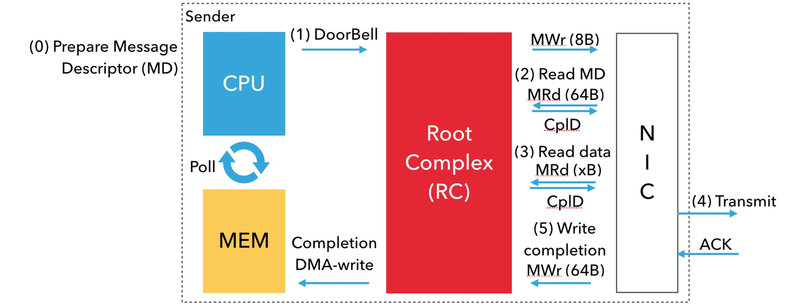

RDMA - inline 内联提高小包性能-降低时延(减少两个 PCIe 往返延迟)
RDMA - inline 内联提高小包性能-降低时延(减少两个 PCIe 往返延迟)
背景知识 - IB与PCIE是如何工作的?
摘要
这篇文章描述了通过 PCI Express 结构在 CPU 和 NIC 之间发生的一系列协调事件，以通过 InfiniBand 互连传输消息并发出其完成信号。
通过 InfiniBand 发送消息的主要方法是通过 Verbs API。libibverbs 是此 API 的标准实现，由 Linux-RDMA 社区维护。Verbs 中有两种函数：慢速路径函数和快速路径函数。慢速路径函数（例如 ibv_open_device、ibv_alloc_pd 等）与资源（例如上下文、保护域和内存区域）的创建和配置有关。它们之所以被称为“慢速”，是因为它们涉及内核，因此会产生上下文切换的昂贵开销。快速路径函数（例如 ibv_post_send、ibv_poll_cq 等）处理操作的启动和完成。它们之所以被称为“快速”，是因为它们绕过内核，因此比慢速路径函数快得多。通信的关键路径主要由快速路径函数组成，有时还包括慢速路径函数（例如 ibv_reg_mr），用于动态注册内存区域（取决于通信中间件）。这篇文章重点介绍程序员执行 ibv_post_send 后发生的机制。
快速 PCIe 背景
网络接口卡 (NIC) 通常通过 PCI Express (PCIe) 插槽连接到服务器。PCIe I/O 子系统的主要导体是根复合体 (RC)。RC 将处理器和内存连接到 PCIe 结构。PCIe 结构可能由设备层次结构组成。连接到 PCIe 结构的外围设备称为 PCIe 端点。PCIe 协议由三层组成：事务层、数据链路层和物理层。第一层，即最上层，描述发生的事务类型。对于这篇文章，两种类型的事务层数据包 (TLP) 是相关的：MemoryWrite (MWr) 和 Memory Read (MRd)。与独立的 MWr TLP 不同，MRd TLP 与来自目标 PCIe 端点的带数据完成 (CplD) 事务相结合，其中包含发起者请求的数据。数据链路层使用数据链路层数据包 (DLLP) 确认 (ACK/NACK) 和基于信用的流控制机制确保所有事务的成功执行。只要发起者有足够的信用额度，它就可以发起事务。当它从邻居那里收到更新流控制 (UpdateFC) DLLP 时，它的信用额度就会得到补充。这种流控制机制允许 PCIe 协议有多个未完成的事务
涉及的基本机制
首先，我将描述如何使用完全卸载方法发送消息，即 CPU 仅通知 NIC 有消息要传输；NIC 将完成传输数据的其他所有工作。在这种方法中，剩余CPU 可用于计算活动(业务)。但是，这种方法可能会损害小消息的通信性能（很快就会变得明显）。为了提高此类情况下的通信性能，InfiniBand 提供了某些操作功能，我将在下一节中描述这些功能。
从 CPU 程序员的角度来看，存在一个传输队列（Verbs 中的发送队列是队列对 (QP)）和一个完成队列（Verbs 中的 CQ 的长格式）。用户将其消息描述符（Verbs 中的 MD；工作队列元素/条目 (WQE；wookie)）发布到传输队列，然后轮询 CQ 以确认已发布消息的完成。用户还可以请求通过中断通知完成情况。但是，轮询方法是面向延迟的，因为关键路径中没有上下文切换到内核。网络上消息的实际传输是通过处理器芯片和 NIC 之间的协调进行的，使用内存映射 I/O (MMIO) 和直接内存访问 (DMA) 读写。我将在下图下方描述这些步骤

步骤 0：用户首先将消息描述符 MD 排队到 TxQ 中。然后，网络驱动程序准备包含 NIC 标头和指向有效负载的指针的设备特定 MD。
步骤 1：使用 8 字节原子写入内存映射位置，CPU（网络驱动程序）通知 NIC 已准备好发送消息。这称为敲响门铃(DoorBell)。PCIE的RC 使用 MWr PCIe 事务执行门铃。
步骤 2：门铃响后，NIC 使用 DMA 读取获取 MD。MRd PCIe 事务执行 DMA 读取, 大小为64字节。
步骤 3：然后，NIC 将使用另一个 DMA 读取（另一个 MRd TLP）从已注册的内存区域获取有效负载。请注意，在 NIC 执行 DMA 读取之前，必须将虚拟地址转换为其物理地址。
步骤 4：一旦 NIC 收到有效负载，它就会通过网络传输读取的数据。成功传输后，NIC 会收到来自目标 NIC 的确认 (ACK)。
步骤 5：收到 ACK 后，NIC 将通过 DMA 写入（使用 MWr TLP）完成队列条目 (CQE；在 Verbs 中又称为 cookie；在 Mellanox InfiniBand 中为 64 字节）到与 TxQ 关联的 CQ。然后 CPU 将轮询此完成以取得进展。
总之，每个提交的关键数据路径需要一次 MMIO 写入(CPU通知网卡的DoorBell)、两次 DMA 读取(先读描述符,再读数据)和一次 DMA 写入(写入发送完成CQE)。DMA 读取转换为昂贵的往返 PCIe 延迟。例如，ThunderX2 机器的往返 PCIe 延迟约为 125 纳秒。
操作功能 内联Inline、Postlist、无信号完成(Unsignaled Completions)和编程 I/O(Programmed I/O ) 是 IB 的操作功能，有助于减少这种开销。我将在下文中描述它们，其中考虑 QP 的深度为 n。
Postlist：IB 允许应用程序通过一次调用 ibv_post_send 来发布 WQE 链接列表，而不是每次 ibv_post_send 只发布一个 WQE。它可以将 DoorBell 响铃次数从 n 减少到 1。
内联：发送数据时，CPU（网络驱动程序）将数据复制到 WQE 中。因此，通过对 WQE 的第一次 DMA 读取，NIC 也会获得有效负载，从而消除了对有效负载的第二次 DMA 读取。
未发出信号的完成：IB 允许应用程序关闭 WQE 的完成，而不是为每个 WQE 发出完成信号，前提是每 n 个 WQE 中至少有一个发出信号(CQE)。关闭完成会减少 NIC 对 CQE 的 DMA 写入。此外，应用程序轮询更少的 CQE，从而减少取得进展的开销。
BlueFlame：BlueFlame 是 Mellanox 的编程 I/O 术语——它与 DoorBell 一起写入 WQE，从而切断 WQE 本身的 DMA 读取。请注意，BlueFlame 仅在没有 Postlist 的情况下使用。使用 Postlist，NIC 将 DMA 读取链接列表中的 WQE。
为了减少 PCIe 往返延迟的开销，开发人员通常将 Inlining 和 BlueFlame 一起用于小消息。它消除了两个 PCIe 往返延迟。虽然 Inlining 和 BlueFlame 的使用取决于消息大小，但 Postlist 和 Unsignaled Completions 的使用主要取决于用户的设计选择和应用程序语义。
Nvidia RDMA inline receive - Nvidia RDMA 内联接收
当 Inline-Receive 处于活动状态时，HCA 可以将接收到的数据写入接收 WQE 或 CQE。使用 Inline-Receive 可节省 PCIe 读取事务，因为 HCA 不需要读取散列表SGL，因此在接收短消息的情况下可提高性能(降低时延)。在轮询 CQ 时，驱动程序将接收到的数据从 WQE/CQE 复制到用户的缓冲区。因此，除了查询 Inline-Receive 功能和 Inline-Receive 激活之外，该功能对用户应用程序是透明的
Inline Receive Experimental Verbs - 内联接收的实验VerbsAPI
- ibv_exp_query_device - 查询设备内联接收的大小
- inline_recv_size
- ibv_exp_create_qp - 创建QP
- max_inl_recv
- ibv_exp_create_dct - 创建动态连接目标端
- inline_size
Inline Receive Experimental Device Attributes - 设备内联接收属性
IBV_EXP_DEVICE_ATTR_INLINE_RECV_SZ
Inline Receive RDMA-Core Verbs - 创建QP时允许内联接收
- mlx5dv_create_qp
- MLX5DV_QP_CREATE_ALLOW_SCATTER_TO_CQE
Inline Receive RDMA-Core Environmental Variables - 开启散列小包到CQE的环境变量
MLX5_SCATTER_TO_CQE
Relevant Man Pages - 更多关于散列/内联的内容请参考创建QP的文档
mlx5dv_create_qp: https://github.com/linux-rdma/rdma-core/blob/master/providers/mlx5/man/mlx5dv_create_qp.3.md
MLX5DV_QP_CREATE_DISABLE_SCATTER_TO_CQE - 禁用散列到完成队列元素CQE
如果 IOVA 与进程的 VA 不匹配，并且消息有效负载大小足够小以触发散射到 CQE 功能，则应设置MLX5DV_QP_CREATE_DISABLE_SCATTER_TO_CQE 标志。当使用设备内存时，不应使用 IBV_SEND_INLINE 和散射到 CQE，因为无法进行 memcpy
代码分析
rdma-core用户态驱动项目及内核态驱动
代码语言：javascript
复制
|
|
总结
- 应用开启小包内联后, 由驱动来完成内存拷贝
- 拷贝有三种形态: 将用户发送的小包拷贝到发送WQE, 将完成的数据拷贝到CQE, 将接收的小包拷贝到接收WQE
参考
IB与PCIE是如何工作的(发包流程): https://www.rohitzambre.com/blog/2019/4/27/how-are-messages-transmitted-on-infiniband
Nvidia inline receive: https://docs.nvidia.com/networking/display/rdmacore50/inline+receive
create_qp: https://github.com/linux-rdma/rdma-core/blob/master/providers/mlx5/man/mlx5dv_create_qp.3.md
【RDMA】IBV_SEND_INLINE和IBV_SEND_SIGNALED的原理|RDMA小消息通信性能优化 https://blog.csdn.net/bandaoyu/article/details/119207147
【RDMA】InfiniBand如何工作和小消息通信性能优化方案: https://blog.csdn.net/bandaoyu/article/details/119204643
https://www.rohitzambre.com/blog/2019/4/27/how-are-messages-transmitted-on-infiniband
晓兵(ssbandjl)
博客: https://cloud.tencent.com/developer/user/5060293/articles | https://logread.cn | https://blog.csdn.net/ssbandjl | https://www.zhihu.com/people/ssbandjl/posts
https://chattoyou.cn(吐槽/留言)
DPU专栏
https://cloud.tencent.com/developer/column/101987
技术会友: 欢迎对DPU/智能网卡/卸载/网络,存储加速/安全隔离等技术感兴趣的朋友加入DPU技术交流群
weixin: ssbandjl
公众号: 云原生云

- 原文作者：晓兵
- 原文链接：https://logread.cn/post/rdma/rdma_inline/
- 版权声明：本作品采用知识共享署名-非商业性使用-禁止演绎 4.0 国际许可协议进行许可，非商业转载请注明出处（作者，原文链接），商业转载请联系作者获得授权。